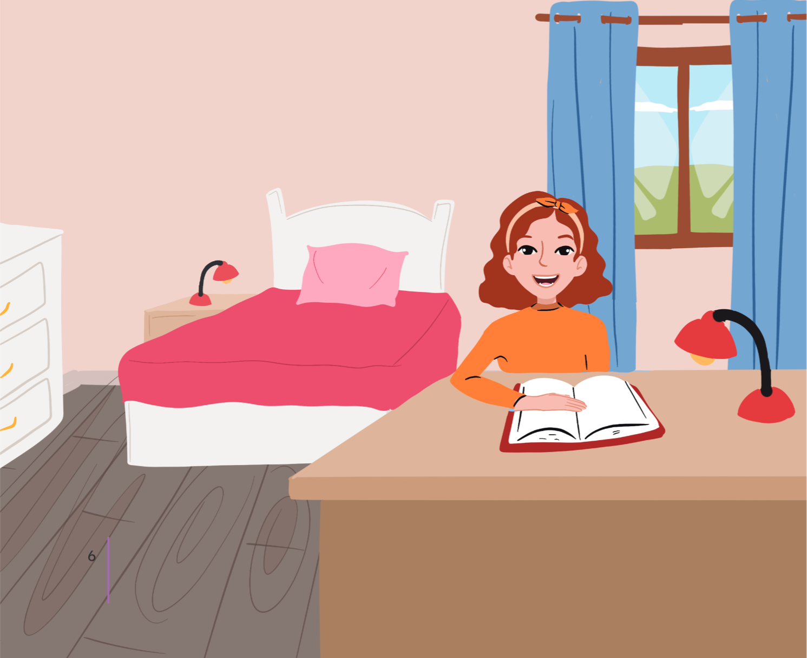

Unë po rritem
Situata 1.
Unë jam Linda. Jam në klasën e katërt. Prindërit çdo ditë më thonë: “Linda, ti po rritesh dhe po bëhesh vajzë e mbarë!”.
Po ju tregoj se pse ata mendojnë kështu. Më besoni, nuk po mburrem, vetëm dua të ndaj këtë kënaqësi me ju, moshatarët e mi.
Tani unë kam krijuar shprehitë e mia. Çdo mëngjes pastrohem, rregulloj dhomën time, vishem dhe mbath këpucët e përshtatshme për stinën. Ushqehem me orar dhe me ushqime të shëndetshme. Shkoj në shkollë pasi t`i kem kryer të gjitha detyrat. Ushtroj balet, sepse është pasioni im. Po ashtu, vijoj kurse të gjuhëve të huaja, sepse, siç thonë poetët tanë: "Sa gjuhë di, aq vlen".
Jashtë, në shkollë, në teatër, në kinema e kudo sillem mirë dhe respektoj rregullat. Përvojat ditore e sidomos ndonjë shqetësim ose problem i diskutoj me prindërit.
Mos të harroj të përmend se u ndihmoj babait e nënës rreth punëve të shtëpisë. Më së shumti më pëlqen të gatuaj dhe ta shtroj tryezën e ngrënies.
Në kohën e lirë luaj me shokët e shoqet e mia, argëtohemi me prindërit dhe nganjëherë këqyri televizor. Afër shtratit gjithmonë mbaj një libër dhe para gjumit lexoj, sepse leximi më qetëson dhe më bën të ëndërroj.
